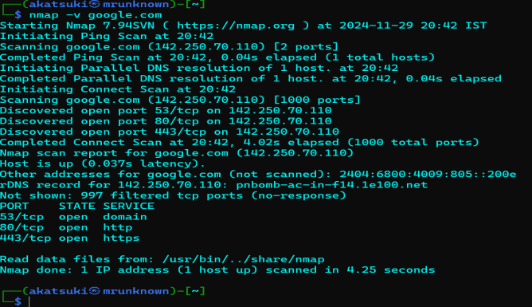

Verbose scan
-v: verbose scan
command: nmap -v google.com

ICMP ECHO ping scan
-sn: Ping Scan - disable port scan
-PE: Perform the ICMP ECHO ping scan
explain: This scan is useful for locating active devices or determining if ICMP is passing through a firewall
command: nmap -sn -PE google.com

UDP ping scan
-sn: Ping Scan - disable port scan
-PU: UDP scan
command: sudo nmap -sn -PU 142.250.70.110

ARP ping scan
-sn: Ping Scan - disable port scan
-PR: use to perform ARP ping scan
command: nmap -sn -PR 142.250.70.110

TCP SYN ping scan
-sn: Ping Scan - disable port scan
-PS: use to perform SYN ping scan
command: nmap -sn -PS 142.250.70.110

TCP ACK ping scan
-sn: Ping Scan - disable port scan
-PA: use to perform ACK ping scan
command: nmap -sn -PA 142.250.70.110

IP protocal ping scan
-sn: Ping Scan - disable port scan
-PS: use to perform SYN ping scan
command: sudo nmap -sn -PO 142.250.70.110

ICMP address Mask ping scan
-sn: Ping Scan - disable port scan
-PM: use to perform an ICMP address mask ping scan
command: nmap -sn -PM 142.250.70.110